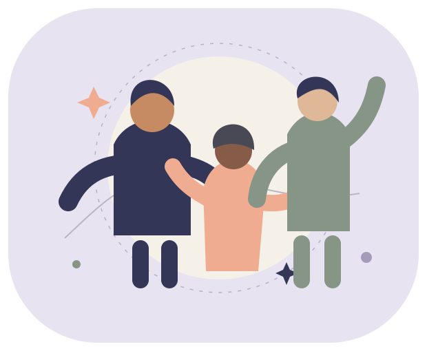

Escuta sem culpa
Não atribua dificuldades de atenção a falta de fé, preguiça, pecado ou possessão. Pergunte o que ajuda e respeite o cuidado em saúde.
MENTES DIFERENTES. DIGNIDADE IGUAL.
Um Brasil onde diferenças neurológicas encontram respeito, relações encontram cuidado e a fé abre espaço para todos.
Para quem é neurodivergente. Para quem cuida. Para quem quer acolher.

COMECE PELO QUE IMPORTA AGORA
Você não precisa ler tudo.
Escolha o ponto em que precisa de apoio.
Perfis, necessidades e apoios sem reduzir pessoas a rótulos.
02 / PROTEGERO que a legislação brasileira prevê e quais condições precisam ser avaliadas.
03 / ACOLHERFamília, amizade, trabalho e comunidades de fé com menos barreiras.
ENTENDER SEM ESTEREOTIPAR
Neurodiversidade descreve a diversidade de funcionamentos neurológicos. Não é um diagnóstico nem uma categoria jurídica única. [1]
“Neurodivergente” é um termo amplo, usado com sentidos diferentes. Pessoas com o mesmo diagnóstico podem ter necessidades e forças muito diferentes. Mais de uma condição pode coexistir.
CURIOSIDADE COM RESPONSABILIDADE
Perguntas difíceis merecem respostas honestas. Explore os achados, as hipóteses e aquilo que ainda não foi demonstrado.
Dignidade não depende de uma teoria genética. A defesa da inclusão continua válida quando uma hipótese não se confirma. Reconhecer dificuldades e oferecer tratamento é compatível com respeitar a identidade da pessoa.
BRASIL · DIREITOS COM CONTEXTO
Leis consultadas em 09/10/2026. O alcance de cada direito depende da norma, dos fatos e, em alguns casos, de avaliação individual.
TDAH não assegura, por si só, estabilidade no emprego, jornada reduzida, reserva de vaga, benefício assistencial ou aposentadoria. A análise depende do regime de trabalho, do enquadramento legal e das regras de cada benefício. Leve seus registros à Defensoria Pública, ao sindicato ou a um advogado.
Preparar um pedido de apoioFÉ QUE CONSTRÓI PONTES
Pessoas neurodivergentes podem ter fé, mudar de religião ou não ter religião. Pertencer deve preservar a liberdade de consciência e a autonomia.
“Você não precisa esconder suas necessidades para ser recebido aqui.”
Frase proposta para uma comunidade acolhedora — não é citação bíblica.
A Bíblia não usa a categoria clínica moderna “TDAH”. Essa ausência não prova uma omissão deliberada de um grupo genético, nem que pessoas com TDAH tenham uma posição especial na criação. Não é possível diagnosticar personagens bíblicos retrospectivamente com segurança.
Não apresentamos como fato a ideia de que “todas as religiões esqueceram os neurodivergentes” ou de que existiram 2.026 anos de um padrão social único. São alegações históricas amplas que exigiriam evidências específicas.
Nossa proposta: usar a fé como convite à escuta, ao cuidado e à participação. Uma leitura cristã pode se inspirar no amor ao próximo (Marcos 12:31), na dignidade da criação (Gênesis 1:27) e no cuidado entre diferentes membros (1 Coríntios 12:12–26). Essa é uma interpretação ética, não uma conclusão genética. [18] [30] [31]
Escuta, pausas e participação voluntária podem ser combinadas em igrejas, terreiros, centros espíritas, sinagogas, mesquitas e espaços não religiosos, respeitando cada pessoa.
Não atribua dificuldades de atenção a falta de fé, preguiça, pecado ou possessão. Pergunte o que ajuda e respeite o cuidado em saúde.
Disponibilize lugar tranquilo, pausas e liberdade para sair e voltar. Combine alternativas a ruído, luz intensa e toque indesejado.
Ofereça orientações escritas e horários claros. Não imponha exposição pública do diagnóstico, testemunhos ou interrupção de tratamento.
Priorize sua segurança. Procure alguém de confiança, registre fatos e mensagens com privacidade e busque orientação. Uma crença não autoriza impor tratamento ou expor informações de saúde.
Encontrar canais de proteção →MENOS JULGAMENTO. MAIS CONEXÃO.
Orientações de convivência para adaptar em conjunto. A necessidade da pessoa importa mais que o estereótipo.
01 · FAMÍLIA E AMIZADE
Convide para algo específico, combine lembretes e pergunte como a pessoa prefere conversar. Escute antes de interpretar esquecimento como desamor.
02 · AFETO E SEXUALIDADE
Conversem sobre limites, prazer e formas de proteção. Libido elevada não é sinônimo de comportamento compulsivo. Se houver sofrimento ou perda de controle, procure avaliação sem julgamento. [6]
03 · TRABALHO E ESTUDO
Proponha instruções escritas, prioridades explícitas e ambientes com menos interrupções. Horários flexíveis podem ser negociados quando viáveis; não são garantia universal do diagnóstico.
POTENCIAIS PARA O FUTURO
Observe interesses e competências, ofereça autonomia com apoios, avalie barreiras e revise os acordos. Valorize contribuições sem exigir “superpoderes”. Apoiar o sono e tratar sintomas também faz parte da inclusão.
CUIDADO E PESQUISA · BRASIL E MUNDO
Guia de cuidado em TDAH e uma habilidade para pesquisar tratamentos, estudos e inovações, com fontes e incertezas explícitas.
Avaliação, apoios, acompanhamento e acesso no Brasil; referências internacionais selecionadas.
02 / INVESTIGARDistinguir diretrizes, resultados publicados, decisões regulatórias e pesquisas em andamento.
03 / FORMULARPrepare o pedido para o agente. A análise por IA é feita no assistente; o site organiza a informação.
Guia consultado em 28/10/2026. As datas da base anterior de ciência e direitos permanecem indicadas nas respectivas seções. Conteúdo educativo, sem prescrição individual. Catálogo das fontes do guia.
FOCO CLARO · ESCOLHER COM MENOS ATRITO
Um motor, um agente e uma habilidade para avaliar produtos e conteúdos pelo perfil de uso. Para jogos, filmes, séries, sites, apps, software, livros e PDFs.
Começar sem burocracia. Entender o próximo passo. Pausar e voltar. Ajustar o ruído. O Selo TDAH Friendly reúne esses critérios numa avaliação documentada.
O painel calcula e prepara pedidos. O agente pesquisa pelo nome ou analisa o arquivo no seu assistente. A análise depende de evidências; não há IA ou pesquisa automática embutida no site.
Acima de 70 até 80 pontos
Acima de 80 até 90 pontos
Acima de 90 até 100 pontos
70 pontos não recebe selo. Sem dados suficientes, a avaliação fica pendente. Preferência pessoal permanece identificada separadamente.
UMA AÇÃO POSSÍVEL, HOJE
Escolha um contexto e organize um pedido de apoio. Sem cadastro, sem envio de dados e sem necessidade de contar sua história aqui.
As marcações são preservadas ao trocar de contexto nesta página e desaparecem ao recarregar. Adapte o modelo antes de usá-lo. Nada é enviado automaticamente.
PROTEÇÃO E REDE DE CUIDADO
Guarde datas, mensagens e protocolos com segurança. Evite publicar relatos que exponham pessoas ou dados de saúde.
Canal nacional gratuito para receber e encaminhar denúncias de violações de direitos humanos. Não substitui atendimento de emergência.
Acessar o serviço oficial ↗Busque sindicato, Defensoria Pública ou advogado. O Ministério Público do Trabalho recebe notícias de irregularidades para análise dentro de sua competência.
Canal oficial do MPT ↗A Unidade Básica de Saúde (UBS) pode orientar o acesso à rede do Sistema Único de Saúde (SUS). Leve suas dificuldades concretas e os registros de atendimento disponíveis.
Conhecer a atenção primária ↗Risco imediato de violência: 190. Urgência médica: SAMU 192. Disque Direitos Humanos: 100.
A INFORMAÇÃO TEM ORIGEM
Consulte o documento original, a data e o alcance. Status legislativos podem mudar após a data desta edição.
Precisa ser respeitado. Na escola. No trabalho.
Nas relações. Na comunidade. Na vida.